| name | mean | sd |
|---|---|---|
| solar | 4909.736 | 6929.487 |
| termica | 8250.471 | 1886.645 |
| eolica | 10887.856 | 3931.696 |
| hidraulica | 50466.854 | 11061.858 |
Séries Temporais - Análise descritiva, métodos simples de previsão e diagnóstico
Estatísiticas descritivas
Estatísticas simples
Algumas estatítiscas descritivas podem ser úteis para uma avaliação inicial de séries temporais.
A seguir expõe-se a média e o desvio-padrão para a série multivariada de energia produzida em MWh no Brasil em 2023, segundo cada fonte. Observa-se a superioridade da série hidráulica em relação às demais, confirmando a dependência desta fonte na matriz energética brasileira.
A seguir expõe-se os quartis da mesma série para todas as fontes consideradas. Recordando, os quartis são valores na série que dividem os dados em quatro partes iguais. O primeiro deixa 25% das observações abaixo, o segundo ou a mediana deixa 50% das observações abaixo, enquanto o terceiro e último deixa 75% dos dados abaixo. Observa-se também o mínimo (0%) e máximo (100%) de cada série.
| name | 0% | 25% | 50% | 75% | 100% |
|---|---|---|---|---|---|
| eolica | 692.913 | 7975.784 | 11133.851 | 13983.090 | 20166.24 |
| hidraulica | 23565.749 | 41825.293 | 50623.416 | 58907.708 | 81006.77 |
| solar | 0.237 | 4.913 | 588.847 | 7368.716 | 27222.57 |
| termica | 4415.886 | 6868.407 | 8269.444 | 9438.016 | 19248.15 |
Autocorrelação
A autocorrelação é uma estatyística importante para avaliar sées temporais. Para avaliar a autocorrelação, deve-se defasar a série e testar a correlação da série original com a série defasada. Para uma defasagem (lag = 1) de uma observação, calcula-se a correlação \(r_1\) entre \(y_t\) e \(y_{t-1}\). Para uma defasagem (lag = 2) de duas observações, calcula-se a correlação \(r_2\) entre \(y_t\) e \(y_{t-2}\) e assim sucessivamente.
\[ r_k = \frac{\sum_{t=k+1}^T (y_t-\bar{y})(y_{t-k}-\bar{y})}{\sum_{t=1}^T (y_t-\bar{y})^2} \]
O correlograma consiste no gráfico que plota tais autocorrelações. A seguir é plotado o correlograma da série de níveis de CO2 a partir de 2000.
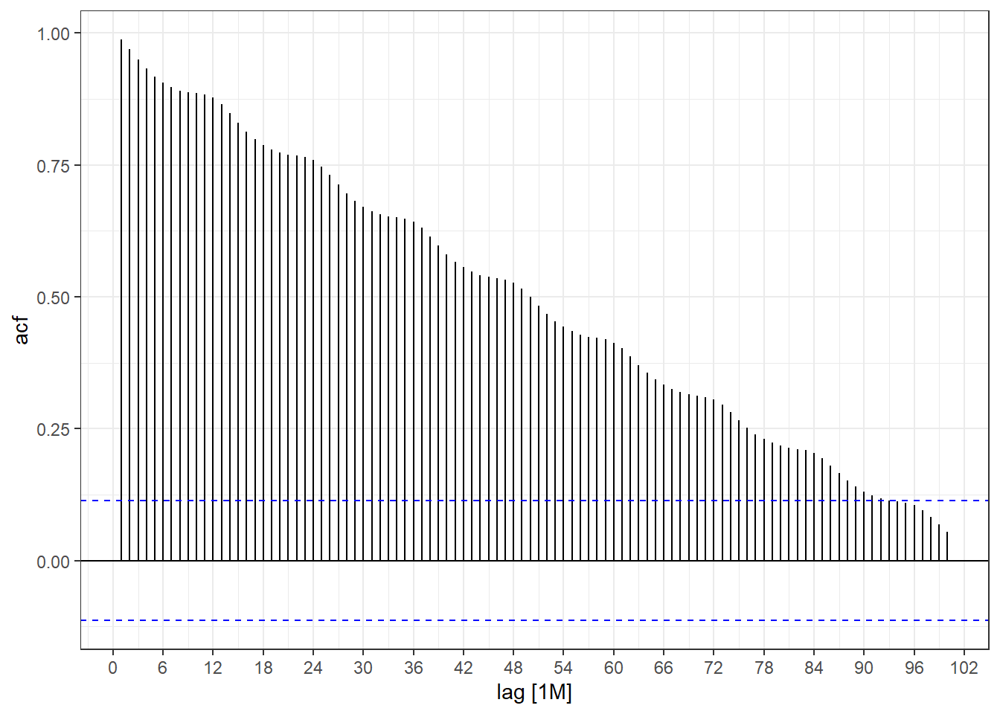
Séries com tendência geralmente apresentam correlações mais altas com defasagens menores, uma vez que os valores adjacentes na série são próximos. Séries com sazonalidade apresentam autocorrelação alta no período sazonal. Para o caso plotado, pode-se confirmar a presença de tendência e de autocorrelação anual na série.
Posteriormente será abordado o diagnóstico dos resíduos de modelos, sendo apresentada a pressuposição de ausência de autocorrelação nos resíduos.
A seguir são apresentadas algumas estatísticas relacionadas à autocorrelação: o primeiro coeficiente de autocorrelação, \(r_1\); a soma dos quadrados dos primeiros 10 coeficientes de autocorrelação, \(\sum_{k=1}^{10}r_i^2\); o primeiro coeficiente de correlação da série diferenciada; a soma dos quadrados dos primeiros 10 coeficientes da série diferenciada; o primeiro coeficiente de correlação da série diferenciada com defasagem de duas observações; a soma dos quadrados dos primeiros 10 coeficientes da série diferenciada de duas observações; e o coeficiente de autocorrelação do primeiro lag sazonal, caso a série tenha sazonalidade.
| acf1 | acf10 | diff1_acf1 | diff1_acf10 | diff2_acf1 | diff2_acf10 | season_acf1 |
|---|---|---|---|---|---|---|
| 0.9875842 | 8.525252 | 0.6864063 | 1.768986 | 0.2458201 | 0.5501127 | 0.8778667 |
Abaixo são plotados algumas séries temporais e abaixo o correlograma correspondente. A série da Figura a corresponde a um ruído branco ou uma sequência de números aleatórios seguindo a distribuição normal. Tal série não apresenta autocorrelação significativa, conforme indica o seu correlograma na Figura d. A série da Figura b apresenta padrão cíclico com sazonalidade de 24h, conforme correlograma da Figura e. Já a série da Figura c apresenta tendência linear positiva clara com sazonalidade anual, conforme correlograma da Figura f.
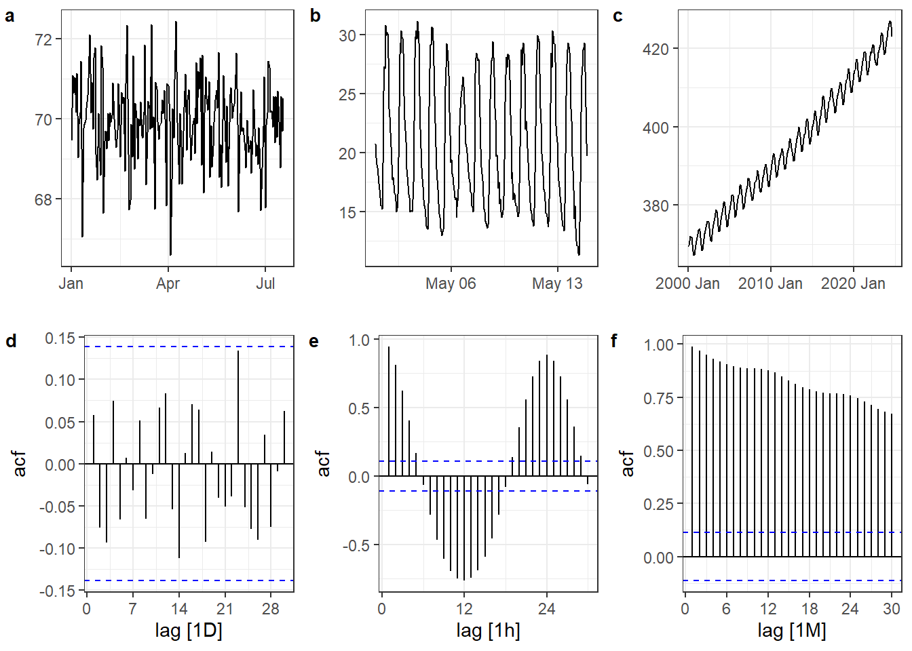
Métodos simples de previsão
Média
Seja a série histórica \(y_1, ..., y_T\). A média pode ser aplicada para previsão de séries temporais, de forma que uma ou mais observações futuras são previstas a partir das T observações disponíveis da série.
\[ \hat{y}_{T+h|T}=\frac{1}{T}\sum_{t=1}^Ty_t=\frac{y_1+y_2+...+y_T}{T} \]
A seguir aplica-se a previsão com a média para três dias à frente na série temporal de produção de carros no Brasil.
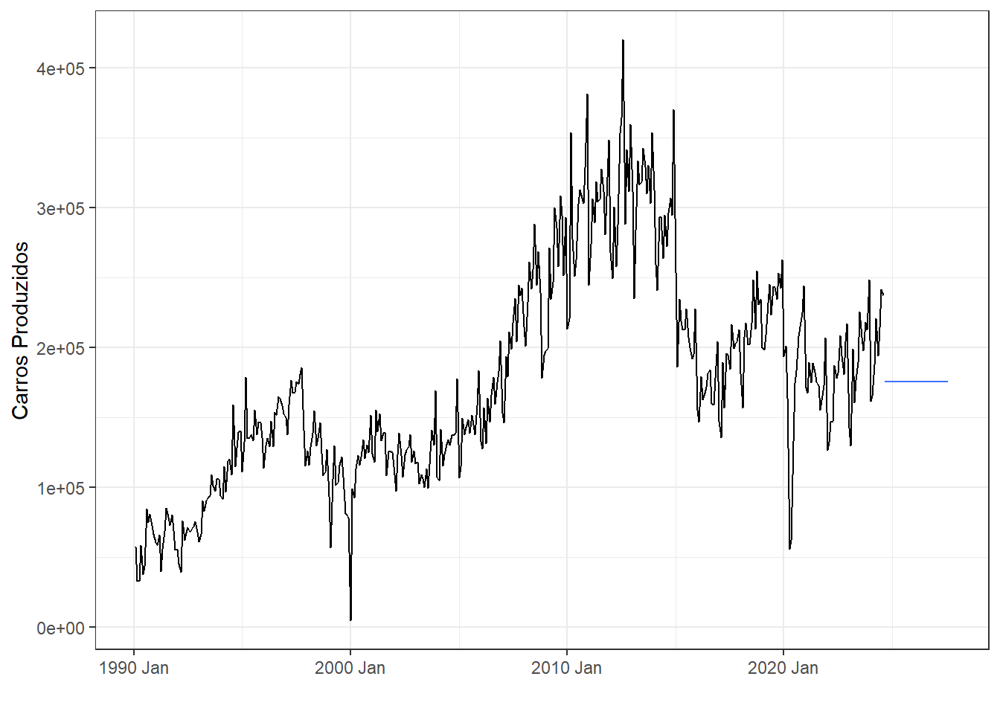
Método ingênuo
O método ingênuo propõe prever as observções futuras como a última observação.
\[ \hat{y}_{T+h|T}=y_T \]
A seguir aplica-se a previsão com o método ingênuo para três dias à frente na série temporal de produção de carros no Brasil.
Ingênuo sazonal
O método ingênuo sazonal é indicado para séries muito sazonais e propõe prever as observções futuras iguais aos períodos das estações anteriores, por exemplo mesmo valor do mês do ano anterior. Na formulação dos valores preditos a seguir, \(m\) consiste no período sazonal e \(k\) é a parte inteira de \((h-1)/m\) ou seja o número completo de anos do período de previsão antes de \(T+h\).
\[ \hat{y}_{T+h|T}=y_{T+h-m(k+1)} \]
A seguir aplica-se a previsão com o método ingênuo sazonal para três dias à frente na série temporal de produção de carros no Brasil.
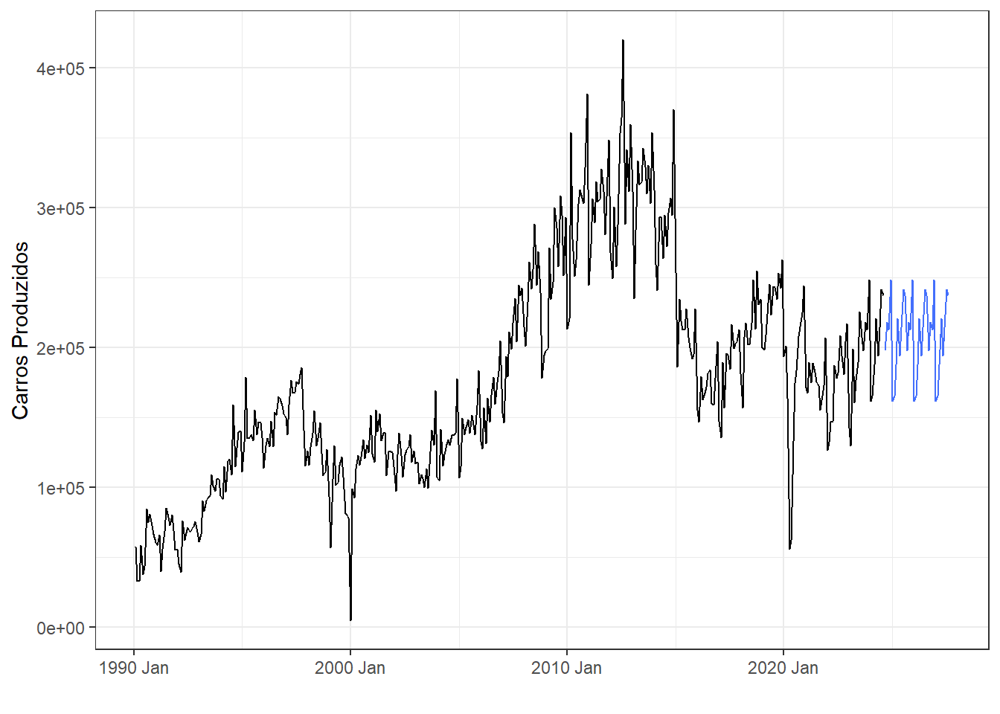
A seguir apresenta-se um conjunto de dados de temperatura instantânea coletada de hora em hora das duas primeiras semanas de Maio de 2024 para a cidade de São joão del-Rei. Os dados foram obtidos em https://tempo.inmet.gov.br/TabelaEstacoes/A001. Foram considerados os dados da primeira semana para treinar os modelos, sendo as previsões plotadas para a semana seguinte juntamente com os dados. Pode-se observar que as previsões obtidas com o método ingênuo sazonal apresentam bom ajuste aos dados.
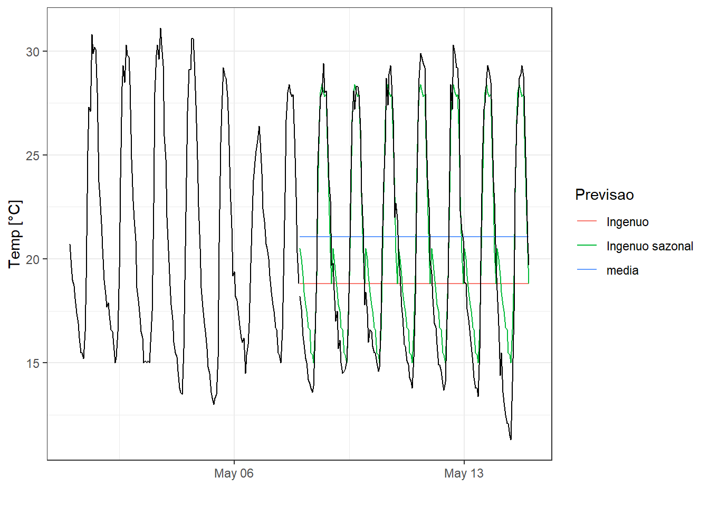
Deriva
O método da deriva é uma variação do ingênuo que permite a previsão de observações com tendência de crescimento ou decréscimo segundo a deriva observada entre a primeira e última observação.
\[ \hat{y}_{T+h|T} = y_T + \frac{h}{T-1}\sum_{t=2}^T(y_t-y_{t-1}) =y_T+h \bigg(\frac{y_T-y_1}{T-1}\bigg) \]
A seguir aplica-se a previsão com o método da deriva para três dias à frente na série temporal de produção de carros no Brasil.
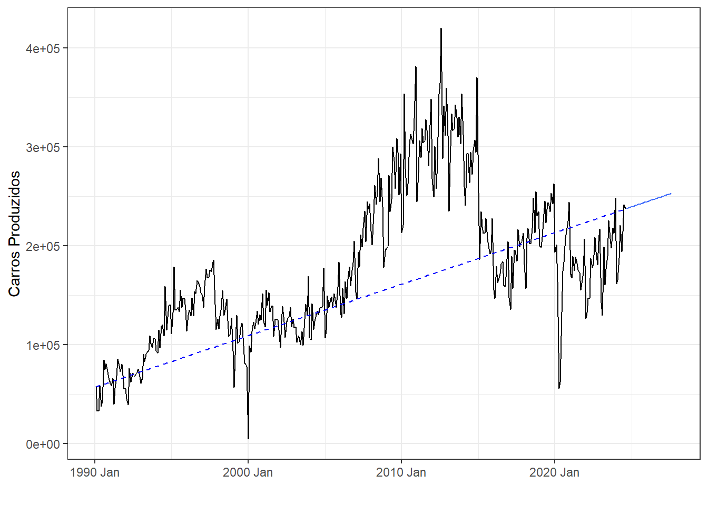
Resíduos e valores previstos
Os valores previstos são denotados por \(\hat{y}_{t|t-1}\), implicando que a previsão de \(\hat{y}_{t}\) é baseada nas observações \(y_1, ..., y_{t-1}\).
Os resíduos de uma série temporal consistem nos valores do erro, sendo calculados como a diferença entre o observado e o previsto em cada instante de tempo, \(e_t=y_t-\hat{y}_t\).
A seguir são observados os valores previstos (.fitted) e os resíduos (.resid) para as previsões obtidas com o método Ingênuo sazonal para o último exemplo para as últimas observações.
| Data | Temp | .fitted | .resid |
|---|---|---|---|
| 2024-05-07 18:00:00 | 27.8 | 26.4 | 1.4 |
| 2024-05-07 19:00:00 | 27.9 | 25.6 | 2.3 |
| 2024-05-07 20:00:00 | 25.8 | 24.1 | 1.7 |
| 2024-05-07 21:00:00 | 23.0 | 22.4 | 0.6 |
| 2024-05-07 22:00:00 | 20.3 | 21.8 | -1.5 |
| 2024-05-07 23:00:00 | 18.8 | 20.7 | -1.9 |
Diagnósticos dos resíduos
Os resíduos de um modelo de séries temporais devem ser:
Não correlacionados.
Com média nula.
Se os resíduos forem correlacionados eles apresentaram informações que deveriam ser incorporadas ao modelo, de forma a melhorar as previsões. Se os resíduos apresentam média diferente de zero, o modelo apresenta um viés. O viés pode ser corrigido subtraindo-o das previsões. Já a autocorrelação entre os resíduos tem correção mais trabalhosa, sendo este tema tratado posteriormente.
É interessante, porém não-obrigatório que os resíduos sejam:
Homocedasticos.
Normalmente distribuídos.
A homocedasticidade consiste na igualdade de variâncias. Séries com resíduos heterocedásticos podem ser tranformadas, visando obter homocedasticidade e normalidade.
A seguir é plotada a série histórica de 187 observações do índice Ibovespa, https://www.infomoney.com.br/cotacoes/b3/indice/ibovespa/historico/.
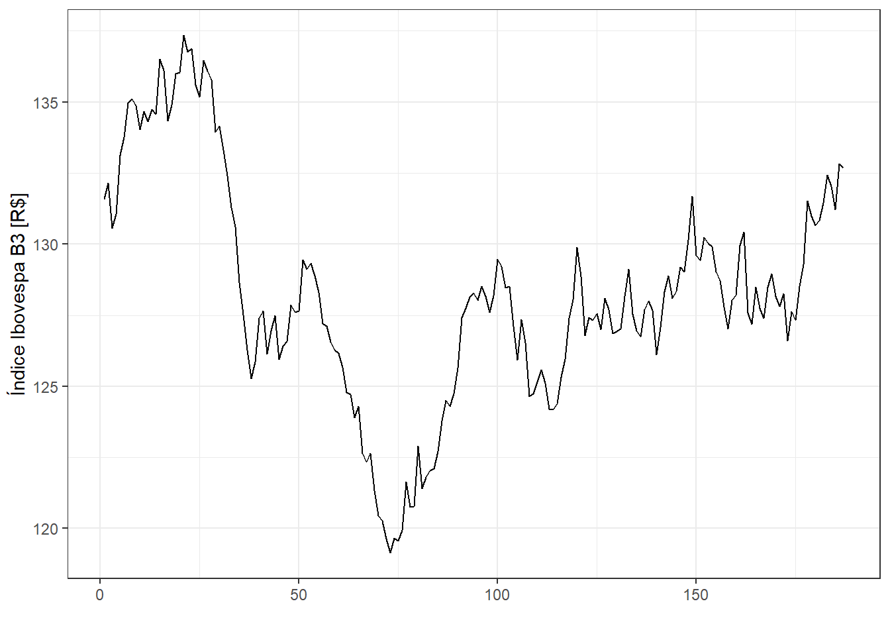
A previsão de índices da bolsa é geralmente feita com bom resultado usando o método Ingênuo. Neste caso os resíduos serão calculados como a diferença da observação atual e anterior, \(e_t = y_t - \hat{y}_t = y_t - y_{t-1}\). A seguir são plotados os resíduos. De forma geral estão aparentam apresentar boa distribuição, sem assimetrias e tendência.
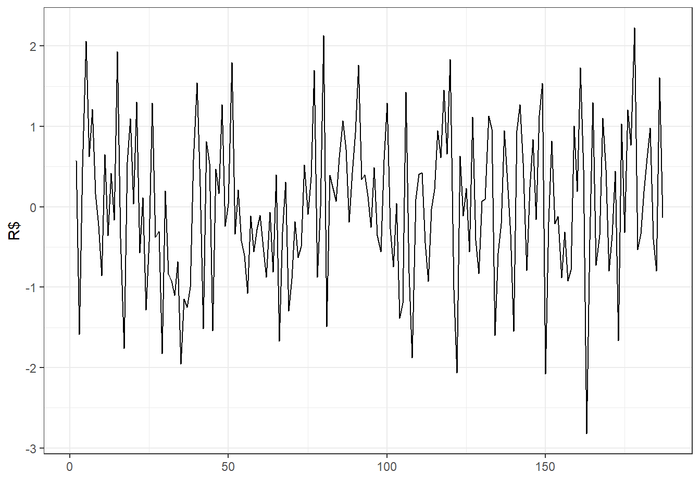
A seguir é plotado o histograma dos resíduos, o qual aparenta adequar-se à distribuição normal.
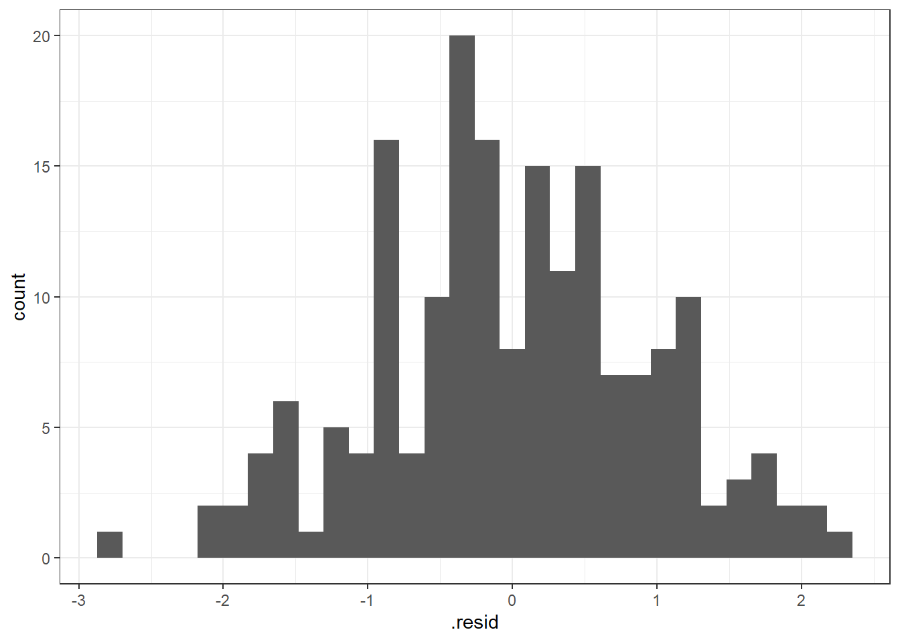
A seguir observa-se o correlograma da série do índice Ibovespa. Pode-se observar que a série é altamente correlacionada considerando defasagem de até 22 observações.
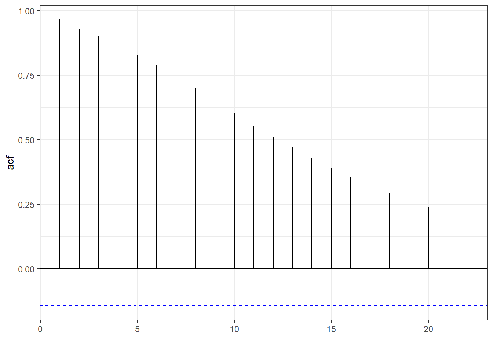
Em sequência plota-se o correlograma dos resíduos. Pode-se observar que o método Ingênuo apresenta resíduos não correlacionados, de forma que o modelo leve em conta toda a informação disponível nos dados.
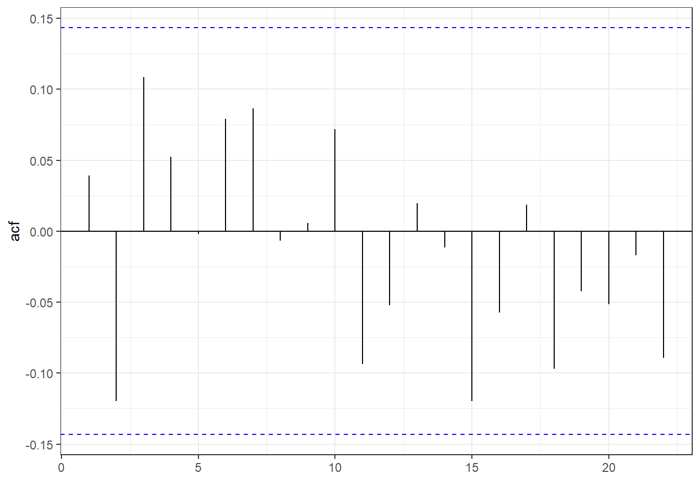
Testes para diagnóstico de autocorrelação
Um teste portmanteau é um teste para averiguar se as \(l\) primeiras autocorrelações são diferentes do que se esperaria para um ruído branco. Um destes testes seria o de Box-Pierce, com estatística calculada conforme segue. Sugere-se \(l=10\) autocorrelações para séries não sazonais e \(l=2m\) para casos sazonais, com \(m\) sendo o período sazonal. Porém, o teste não é adequado para \(l\) auto, sugerindo-se no máximo \(l=T/5\).
\[ Q = T\sum_{k=1}^l r_k^2 \]
Um teste mais adequado é o de Ljung-Box, com estatística calculada conforme segue.
\[ Q^* = T(T+2)\sum_{k=1}^l (T-k)^{-1}r_k^2 \]
Em ambos os casos um alto valor de \(Q^*\) (ou \(Q\)) sugere que as autocorrelações não vem de um ruído branco. Para decisão, considera-se que \(Q^*\) (ou \(Q\)) segue a distribuição \(\chi^2\) com \(l\) graus de liberdade.
A seguir expõe-se o valor \(Q\)) e \(Q^*\) para os resíduos do modelo Ingênuo para os dados do índice Ibovespa. Pode-se concluir que para ambas as estatísticas as autocorrelações dos resíduos não diferem das de uma série ruído branco.
# A tibble: 1 × 3
.model bp_stat bp_pvalue
<chr> <dbl> <dbl>
1 NAIVE(FECHAMENTO) 9.18 0.515# A tibble: 1 × 3
.model lb_stat lb_pvalue
<chr> <dbl> <dbl>
1 NAIVE(FECHAMENTO) 9.51 0.485O método da deriva é um pouco mais adequado que o Ingênuo para séries de índices de bolsas de valores. A seguir são exibidos os resultados dos testes de Box-Pierce e de Ljung-Box para as autocorrelações residuais de tal método.
| .model | bp_stat | bp_pvalue |
|---|---|---|
| RW(FECHAMENTO ~ drift()) | 9.180843 | 0.5150314 |
| .model | lb_stat | lb_pvalue |
|---|---|---|
| RW(FECHAMENTO ~ drift()) | 9.508178 | 0.4846474 |
Intervalos de confiança para previsão
Ao se realizar previsões com séries temporais, considera-se um intervalo de confiança com nível de probabilidade ou confiança de interesse. Para por exemplo um intervalo de previsão de 95% os valores obtidos consistem nos limites que garantem que o valor previsto está entre eles com 95% de confiança.
Um intervalo de previsão para \(h\) passos à frente com 95% de confianca pode ser calculado conforme segue.
\[ \hat{y}_{T+h|T} \pm1,96 \hat\sigma_h, \]
onde \(1,96\) consiste no valor do quantil na distribuição normal-padrão \(z\), com 0,95 de probabilidade ou confiança. Obviamente, caso deseje-se um intervalo com nível de confiança diferente, deve-se selecionar o valor \(z\) adequado.
O desvio-padrão para previsões com \(h=1\) (um passo a frente) pode ser calculado como o desvio-padrão dos resíduos, onde \(K\) é o número de parâmetros do modelo e \(M\) o número de valores ausentes nos resíduos (para o método ingênuo e o da deriva, por exemplo, \(M=1\), uma vez que a primeira observação não pode ser estimada).
\[ \hat\sigma = \sqrt{\frac{1}{T-K-M}\sum_{t=1}^T e_t^2} \]
Para previsões com \(h>1\) a estimativa de \(\sigma_h\) é mais complexa. A seguir são expostas as Equações para estimar o desvio-padrão para os métodos benchmarking até aqui exposto, onde \(m\) é o período sazonal e \(k\) consiste na parte inteira de \((h−1)/m\).
| Método | desvio-padrão para \(h\) previsões |
|---|---|
| Média | \(\hat\sigma_h = \hat\sigma\sqrt{1+1/T}\) |
| Ingênuo | \(\hat\sigma_h = \hat\sigma\sqrt{h}\) |
| Ingênuo sazonal | \(\hat\sigma_h = \hat\sigma\sqrt{k+1}\) |
| Deriva | \(\hat\sigma_h = \hat\sigma\sqrt{h(1+h/(T-1))}\) |
A seguir apresenta-se intervalos de confiança de 80 e 95% para \(h=10\) períodos para o índice Ibovespa.
# A tsibble: 10 x 6 [1]
# Key: .model [1]
.model DATA FECHAMENTO .mean `80%` `95%`
<chr> <dbl> <dist> <dbl> <hilo> <hilo>
1 RW(FE… 188 N(133, 0.91) 133. [131.4798, 133.9262]80 [130.8322, 134.5737]95
2 RW(FE… 189 N(133, 1.8) 133. [130.9744, 134.4435]80 [130.0562, 135.3616]95
3 RW(FE… 190 N(133, 2.8) 133. [130.5849, 134.8449]80 [129.4574, 135.9724]95
4 RW(FE… 191 N(133, 3.7) 133. [130.2549, 135.1869]80 [128.9495, 136.4923]95
5 RW(FE… 192 N(133, 4.7) 133. [129.9626, 135.4912]80 [128.4992, 136.9545]95
6 RW(FE… 193 N(133, 5.6) 133. [129.6968, 135.7689]80 [128.0896, 137.3761]95
7 RW(FE… 194 N(133, 6.6) 133. [129.4510, 136.0266]80 [127.7105, 137.7671]95
8 RW(FE… 195 N(133, 7.6) 133. [129.2209, 136.2687]80 [127.3554, 138.1342]95
9 RW(FE… 196 N(133, 8.6) 133. [129.0034, 136.4981]80 [127.0197, 138.4818]95
10 RW(FE… 197 N(133, 9.5) 133. [128.7966, 136.7169]80 [126.7002, 138.8132]95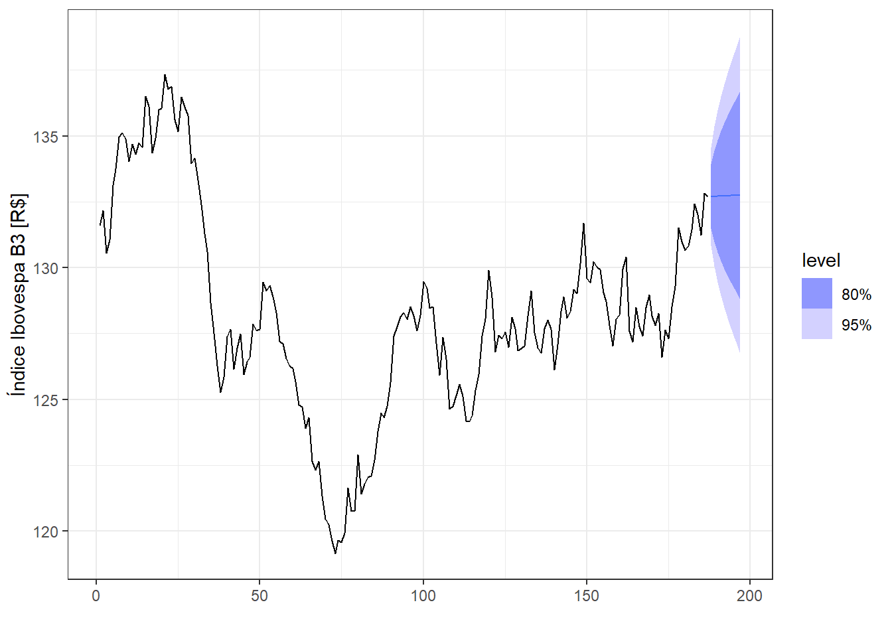
Transformações
Trasnformações podem ser usadas nas séries temporais, de forma a garantir, por exemplo, que as pressuposições sobre os resíduos sejam cumpridas, ou que alguma variação que aumenta ou cresce com o tempo seja corrigida. A transformação logaritma é geralmente útil. Tomando a série original, \(y_1, y_2, ..., y_T\), a série transformada fica \(w_1, w_2, ..., w_T\), com \(w_t =log(y_t)\). Uma mudança na escala log com base 10 em uma unidade corresponde uma multiplicação por 10 na escala original.
Outras transformações podem ser mais interessantes em alguns casos, porém nem sempre de fácil interpretação, por exemplo as transfoprmações de potência, \(w_t = y_t^p\). A transformação de Box-Cox envolve ambos logarítmo e potência, conforme segue.
\[ w_t = \Bigg\{ \begin{matrix} \text{log}(y_t), \text{ }\lambda=0 \\ (\text{sign}(y_t)|y_t|^\lambda-1)/\lambda, \text{ }\lambda>0 \end{matrix} \]
onde \(\text{sign}(y_t) = 1\) se \(y\geq0\) e \(\text{sign}(y_t) =-1\), caso contrário.
A seguir apresenta-se graficamente a série temporal das ações da vale (VALE3), https://br.investing.com/equities/vale-on-n1-historical-data. Pode-se observar que a série apresenta alta variabilidade, especialmente de 2021 a 2023.
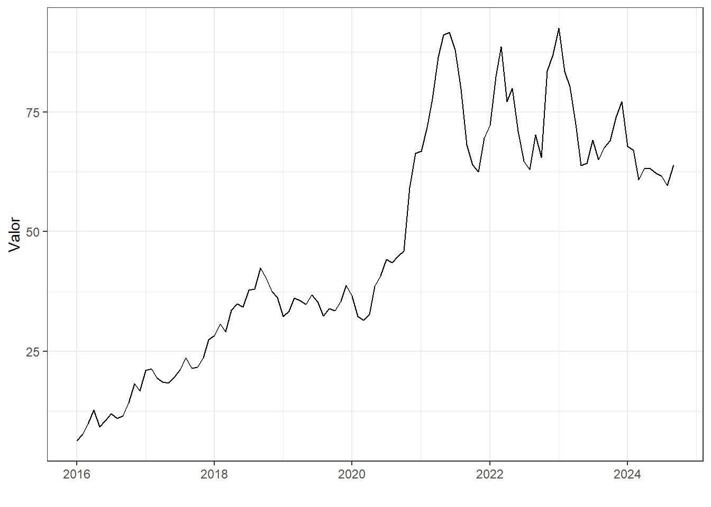
A seguir apresenta-se a mesma série após transformação de Box-Cox com \(\lambda = 1,27\).
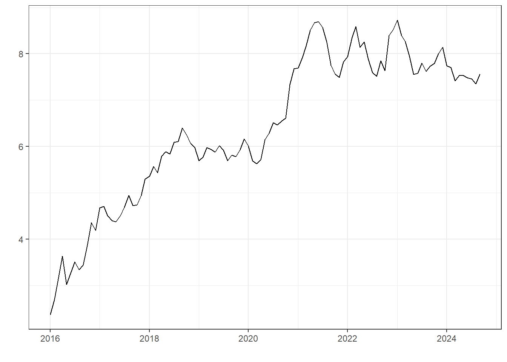
Avaliação de modelos de séries temporais
Uma avaliação ideal de um modelo de séries temporais deve ser baseada no desempenho do modelo em novos dados e não nos valores residuais. Para tal, deve-se considerar dados separados para teste do modelo ou em dados futuros. Portanto, não se deve considerar os dados usados para estimar (treinar) o modelo para testá-lo.
Conforme visto no caso para dados de temperatura instantânea para São João del-Rei, uma primeira abordagem consiste em simplesmente usar parte inicial da série para treino do modelo e as últimas observações para teste. O percentual de observações usadas para treino/teste depende do número de observações disponíveis na série.
A seguir ilustra-se arbitrariamente a separação das primeiras 75% observações em treino e os 25% restantes para teste.
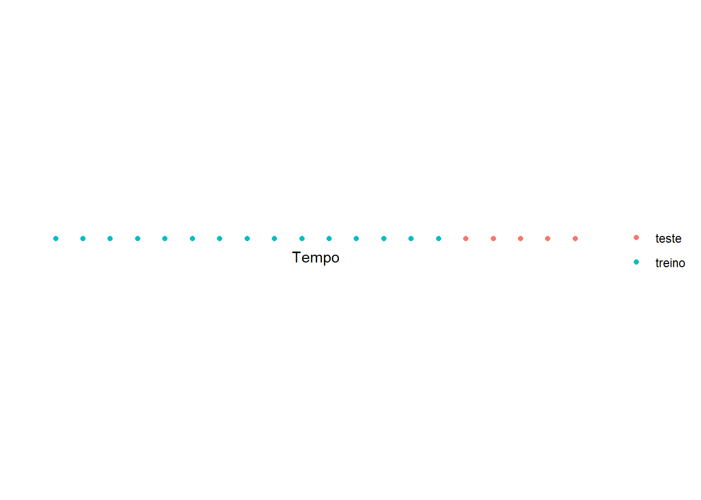
O erro de previsão (não confundir com resíduo) é calculado conforme segue, com os dados de treino \(y_1,...,y_T\) e de teste \(y_{T+1}, y_{T+2}, ...\).
\[ e_{T+h} = y_{T+h} - \hat{y}_{T+h|T} \]
O desempenho do modelo pode ser medido por diversas métricas. A seguir são apresentadas as principais métricas de ajuste. O erro médio absuluto (mean absolute error - MAE) e a raiz da média dos quadrados dos erros (root mean square error - RMSE) são medidos na mesma escala da variável da série. O MAE é menos suscetível a outliers e ambos devem ser minimizados. O O erro percentual médio absuluto (mean absolute percentage error - MAPE) tem a vantagem de ser livre de escala, permitindo a comparação do erro em séries distintas.
| Métrica | Fórmula |
|---|---|
| MAE | \(\text{MAE = mean}(|e_t|)\) |
| RMSE | \(\text{RMSE = }\sqrt{\text{mean}(e_t^2)}\) |
| MAPE | \(\text{MAPE = mean}(|p_t|)\), \(p_t = 100e_t/y_t\) |
| MASE | \(\text{MAE = mean}(|q_j|)\) |
As métricas com o erro padronizado, \(q_j\), são alternativais ao MAPE para comparar desempenho em séries distintas. Elas consideram a escala dos dados de treino para tal. A fórmula a seguir é usada para padronizar os erros. Em séries sazonais substitui-se \(T-1\) por \(T-m\), onde \(m\) é o período sazonal. O MASE na tabela acima considera tal padronização.
\[ q_j = \frac{e_j}{\frac{1}{T-1}\sum_{t+2}^T |y_t-y_{t-1}|} \]
A seguir expõe-se o desempenho dos três métodos considerados nos dados de temperatura instantânea de São João-del-Rei.
# A tibble: 3 × 4
.model RMSE MAE MAPE
<chr> <dbl> <dbl> <dbl>
1 Ingenuo 5.92 4.98 23.7
2 Ingenuo sazonal 1.70 1.41 8.14
3 media 5.70 5.17 27.6